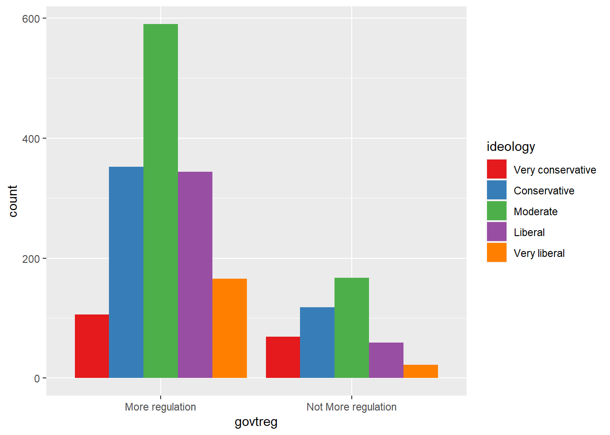
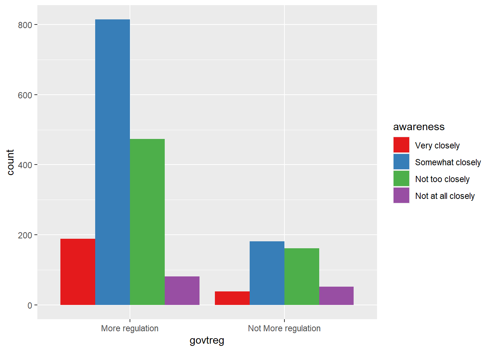
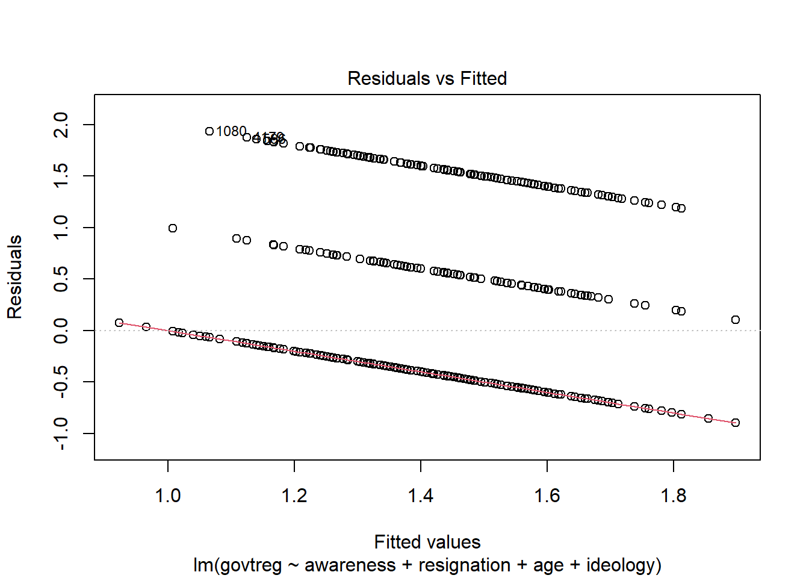
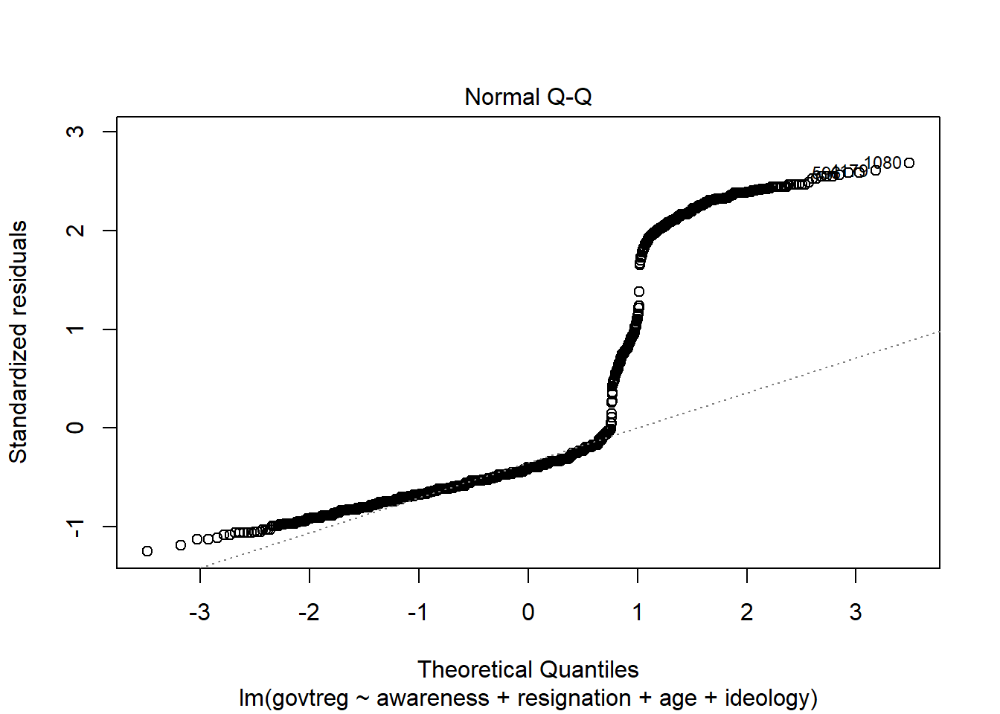
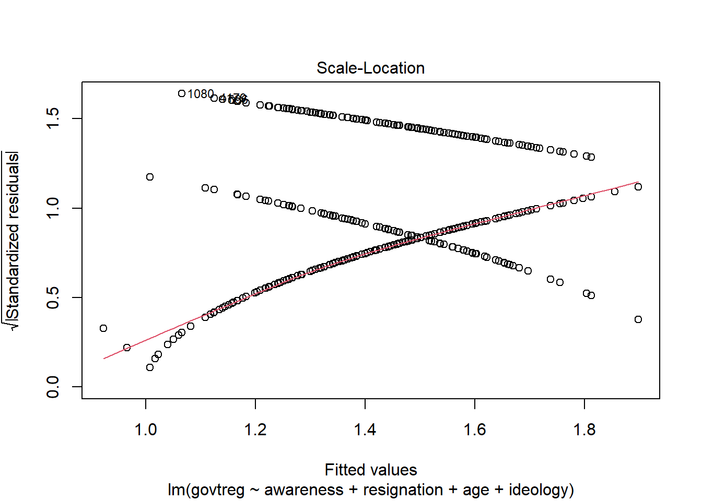

Code
library(tidyverse)
library(haven)
library(labelled)
library(crosstable)
library(MASS)
knitr::opts_chunk$set(echo = TRUE)library(tidyverse)
library(haven)
library(labelled)
library(crosstable)
library(MASS)
knitr::opts_chunk$set(echo = TRUE)In 2001, Google piloted a program to boost profits, which were sinking as the “dot-com bubble” burst, by collecting data generated from users’ search queries and using it to sell precisely targeted advertising. The company’s ad revenues grew so quickly that they expanded their data collection tools with tracking “cookies” and predictive algorithms. Other technology firms took notice of Google’s soaring profits, and the sale of passively-collected data from people’s online activities soon became the predominant business model of the internet economy (Zuboff, 2015).
As the data-collection practices of “Big Tech” firms, including Google, Amazon, Facebook (Meta), Apple, and Microsoft, have gradually been exposed, the public is now aware that the “free” platforms that have become essential to daily life are actually harvesting personal information as payment. Despite consumers being essentially extorted into accepting this arrangement, regulatory intervention into “surveillance capitalism” has remained limited.
Over the two decades since passive data collection began commercializing the internet, survey research has shown the American public’s increasing concern over the dominance Big Tech has been allowed to exert. A 2019 study conducted by Pew Research Center found that 81% of Democrats and 70% of Republicans think there should be more government regulation of corporate data-use practices (Pew Research Center, 2019). It is very unusual to find majorities of both Republicans and Democrats agreeing on any policy position, since party affiliation is known to be a main predictor of any political stance, especially in the current polarized climate. The natural question that arises, then, is what other factors might predict support for increased regulation of data-collection practices?
Although few studies have directly examined the mechanisms behind public support for regulation of passive data collection, a good amount of research has been done on factors influencing individual adoption of privacy protection measures (Barth et al., 2019; Boerman et al., 2021; Turow et al., 2015). It seems a reasonable extrapolation that these factors would similarly influence support for additional data privacy regulation, leading to these hypotheses:
A higher level of awareness of data collection issues predicts support for increased Big Tech regulation.
Greater understanding of how companies use passively collected data predicts support for increased regulation.
The feeling of having no personal control over online tracking predicts support for increased regulation.
Feeling that it is impossible to protect oneself from online tracking, referred to as “digital resignation”, likely does not predict support for increased regulation, due to lack of faith in government’s ability to regulate Big Tech.
Certain demographic traits (age group, education level, and political ideology) have some relationship with attitudes toward Big Tech regulation.
Since there are currently dozens of data privacy bills pending in Congress, pinpointing the forces driving support for this type of legislation can help with both shaping the regulatory framework needed and appealing for broader support from voters.
Pew Research Center’s American Trends Panel (Wave 49) data set can provide insight into which of these factors are predictive of support for greater regulation of technology company data practices. In June 2019, an online survey covering a wide variety of topics was conducted and 4,272 separate observations for 144 variables were collected from adults age 18 and over. The margin of error (at the 95% confidence level) is given as +/- 1.87 percentage points.
The data set was compiled in SPSS and all pertinent variables are categorical.
#read in data from SPSS file
wav49 <- read_sav("_data/ATPW49.sav")Since the data set covers a wide variety of topics, selecting the variables of interest into a subset data frame makes it easier to manage.
sel_vars <- c('PRIVACYNEWS1_W49', 'CONTROLCO_W49', 'UNDERSTANDCO_W49', 'ANONYMOUS1CO_W49', 'GOVREGV1_W49', 'F_AGECAT', 'F_EDUCCAT', 'F_PARTYSUM_FINAL', 'F_IDEO')
wav49_selected <- wav49[sel_vars]Subset variables are renamed for clarity and to align with the operationalized concepts.
wav49_sel_clean <- rename(wav49_selected, awareness = PRIVACYNEWS1_W49, control = CONTROLCO_W49, understanding = UNDERSTANDCO_W49, resignation = ANONYMOUS1CO_W49, govtreg = GOVREGV1_W49, age = F_AGECAT, education = F_EDUCCAT, party = F_PARTYSUM_FINAL, ideology = F_IDEO)
head(wav49_sel_clean)# A tibble: 6 × 9
awareness control unders…¹ resign…² govtreg age educa…³ party ideol…⁴
<dbl+lbl> <dbl+lb> <dbl+lb> <dbl+lb> <dbl+lb> <dbl+l> <dbl+l> <dbl+l> <dbl+l>
1 4 [Not at… NA NA NA NA 4 [65+] 1 [Col… 1 [Rep… 1 [Ver…
2 3 [Not to… 2 [Som… 3 [Ver… 1 [Yes… 1 [Mor… 2 [30-… 2 [Som… 2 [Dem… 3 [Mod…
3 3 [Not to… 3 [Ver… 3 [Ver… 1 [Yes… 1 [Mor… 3 [50-… 2 [Som… 1 [Rep… 1 [Ver…
4 4 [Not at… NA NA NA NA 4 [65+] 3 [H.S… 1 [Rep… 2 [Con…
5 4 [Not at… 4 [No … 4 [Not… 2 [No,… 1 [Mor… 2 [30-… 3 [H.S… 1 [Rep… 2 [Con…
6 2 [Somewh… NA NA NA NA 3 [50-… 2 [Som… 1 [Rep… 2 [Con…
# … with abbreviated variable names ¹understanding, ²resignation, ³education,
# ⁴ideologyThe variable labels contain the full text of the survey questions asked.
#summary of $variable names and their [labels]
var_label(wav49_sel_clean)$awareness
[1] "PRIVACYNEWS1. How closely, if at all, do you follow news about privacy issues?"
$control
[1] "CONTROLCO. How much control do you think you have over the data that companies collect about you?"
$understanding
[1] "UNDERSTANDCO. How much do you feel you understand what companies are doing with the data they collect about you?"
$resignation
[1] "ANONYMOUS1CO. Do you think it is possible to go about daily life today without having companies collect data about you?"
$govtreg
[1] "GOVREGV1. How much government regulation of what companies can do with their customers’ personal information do you think there should be?"
$age
[1] "Age category"
$education
[1] "Education level category"
$party
[1] "Party summary"
$ideology
[1] "Ideology"Because the data set is made up of categorical variables, some transformation and cleaning is required before computing any statistics, including conversion to factor variables and removal of user-defined missing values.
#convert all variables to factors
wav49_factored <- wav49_sel_clean %>%
mutate_all(as_factor)
#set 'Refused' and 'Don't Know" values to NA
levels(wav49_factored$awareness)[levels(wav49_factored$awareness)=="Refused"]<-NA
levels(wav49_factored$control)[levels(wav49_factored$control)=="Refused"]<-NA
levels(wav49_factored$understanding)[levels(wav49_factored$understanding)=="Refused"]<-NA
levels(wav49_factored$resignation)[levels(wav49_factored$resignation)=="Refused"]<-NA
levels(wav49_factored$govtreg)[levels(wav49_factored$govtreg)=="Refused"]<-NA
levels(wav49_factored$age)[levels(wav49_factored$age)=="DK/REF"]<-NA
levels(wav49_factored$education)[levels(wav49_factored$education)=="Don't know/Refused"]<-NA
levels(wav49_factored$party)[levels(wav49_factored$party)=="DK/Refused/No lean"]<-NA
levels(wav49_factored$ideology)[levels(wav49_factored$ideology)=="Refused"]<-NA
#remove NA values
wav49_factored <- na.omit(wav49_factored)
wav49_factored# A tibble: 1,993 × 9
awareness control under…¹ resig…² govtreg age educa…³ party ideol…⁴
<fct> <fct> <fct> <fct> <fct> <fct> <fct> <fct> <fct>
1 Not too closely Some c… Very l… Yes, i… More r… 30-49 Some C… Dem/… Modera…
2 Not too closely Very l… Very l… Yes, i… More r… 50-64 Some C… Rep/… Very c…
3 Not at all close… No con… Nothing No, it… More r… 30-49 H.S. g… Rep/… Conser…
4 Somewhat closely Very l… Very l… No, it… About … 30-49 Colleg… Rep/… Modera…
5 Very closely No con… Nothing No, it… About … 50-64 Some C… Rep/… Conser…
6 Not too closely Very l… Some No, it… More r… 18-29 Some C… Rep/… Conser…
7 Not too closely Some c… A grea… Yes, i… Less r… 30-49 H.S. g… Dem/… Liberal
8 Very closely No con… Very l… No, it… More r… 65+ H.S. g… Rep/… Modera…
9 Not too closely Very l… Very l… Yes, i… More r… 50-64 H.S. g… Dem/… Modera…
10 Not too closely Very l… Very l… No, it… More r… 50-64 H.S. g… Rep/… Conser…
# … with 1,983 more rows, and abbreviated variable names ¹understanding,
# ²resignation, ³education, ⁴ideologyFinally, since the trait of interest is support for government regulation of online data collection, collapsing the factor levels of the outcome variable govtreg to two values - “More regulation” and “Not More regulation” - helps clarify the construct of “support”.
wav49_factored <- wav49_factored %>%
mutate(govtreg = fct_collapse(govtreg, "Not More regulation" = c("Less regulation", "About the same amount")))The data set is now primed for analysis.
As an initial assessment, a summary of response frequencies gives a good overview of trends surrounding the issues represented by the variables.
summary(wav49_factored) awareness control understanding
Very closely :228 A great deal of control: 60 A great deal:122
Somewhat closely :996 Some control : 277 Some :676
Not too closely :635 Very little control :1075 Very little :972
Not at all closely:134 No control : 581 Nothing :223
resignation govtreg age
Yes, it is possible : 717 More regulation :1558 18-29:317
No, it is not possible:1276 Not More regulation: 435 30-49:613
50-64:607
65+ :456
education party ideology
College graduate+ :777 Rep/Lean Rep: 877 Very conservative:175
Some College :552 Dem/Lean Dem:1116 Conservative :470
H.S. graduate or less:664 Moderate :757
Liberal :403
Very liberal :188 Cross tabulation of the variables can also help identify possible predictors.
table <- crosstable(wav49_factored, cols = everything(), by = "govtreg")
as_flextable(table)label | variable | GOVREGV1. How much government regulation of what companies can do with their customers’ personal information do you think there should be? | |
|---|---|---|---|
More regulation | Not More regulation | ||
PRIVACYNEWS1. How closely, if at all, do you follow news about privacy issues? | Very closely | 189 (82.89%) | 39 (17.11%) |
Somewhat closely | 814 (81.73%) | 182 (18.27%) | |
Not too closely | 473 (74.49%) | 162 (25.51%) | |
Not at all closely | 82 (61.19%) | 52 (38.81%) | |
CONTROLCO. How much control do you think you have over the data that companies collect about you? | A great deal of control | 45 (75.00%) | 15 (25.00%) |
Some control | 186 (67.15%) | 91 (32.85%) | |
Very little control | 868 (80.74%) | 207 (19.26%) | |
No control | 459 (79.00%) | 122 (21.00%) | |
UNDERSTANDCO. How much do you feel you understand what companies are doing with the data they collect about you? | A great deal | 97 (79.51%) | 25 (20.49%) |
Some | 516 (76.33%) | 160 (23.67%) | |
Very little | 789 (81.17%) | 183 (18.83%) | |
Nothing | 156 (69.96%) | 67 (30.04%) | |
ANONYMOUS1CO. Do you think it is possible to go about daily life today without having companies collect data about you? | Yes, it is possible | 520 (72.52%) | 197 (27.48%) |
No, it is not possible | 1038 (81.35%) | 238 (18.65%) | |
Age category | 18-29 | 232 (73.19%) | 85 (26.81%) |
30-49 | 463 (75.53%) | 150 (24.47%) | |
50-64 | 489 (80.56%) | 118 (19.44%) | |
65+ | 374 (82.02%) | 82 (17.98%) | |
Education level category | College graduate+ | 633 (81.47%) | 144 (18.53%) |
Some College | 432 (78.26%) | 120 (21.74%) | |
H.S. graduate or less | 493 (74.25%) | 171 (25.75%) | |
Party summary | Rep/Lean Rep | 628 (71.61%) | 249 (28.39%) |
Dem/Lean Dem | 930 (83.33%) | 186 (16.67%) | |
Ideology | Very conservative | 106 (60.57%) | 69 (39.43%) |
Conservative | 352 (74.89%) | 118 (25.11%) | |
Moderate | 590 (77.94%) | 167 (22.06%) | |
Liberal | 344 (85.36%) | 59 (14.64%) | |
Very liberal | 166 (88.30%) | 22 (11.70%) | |
The contingency table of this data, however, reveals no clear relationship between any of these subgroups and opinion on regulation of Big Tech.
The next step, then, is visualization - bar charts can make basic patterns in categorical data easier to spot.
#base support for government regulation
ggplot(data = wav49_factored, aes(x = govtreg)) +
geom_bar() #govtreg grouped by party affiliation
ggplot(data = wav49_factored, aes(x = govtreg, fill = party)) +
geom_bar(position = "dodge") +
scale_fill_brewer(palette = "Set1")#govtreg grouped by ideology
ggplot(data = wav49_factored, aes(x = govtreg, fill = ideology)) +
geom_bar(position = "dodge") +
scale_fill_brewer(palette = "Set1")
#govtreg grouped by education
ggplot(data = wav49_factored, aes(x = govtreg, fill = education)) +
geom_bar(position = "dodge") +
scale_fill_brewer(palette = "Set1")
#govtreg grouped by age
ggplot(data = wav49_factored, aes(x = govtreg, fill = age)) +
geom_bar(position = "dodge") +
scale_fill_brewer(palette = "Set1")#govtreg grouped by resignation
ggplot(data = wav49_factored, aes(x = govtreg, fill = resignation)) +
geom_bar(position = "dodge") +
scale_fill_brewer(palette = "Set1")#govtreg grouped by understanding
ggplot(data = wav49_factored, aes(x = govtreg, fill = understanding)) +
geom_bar(position = "dodge") +
scale_fill_brewer(palette = "Set1")#govtreg grouped by control
ggplot(data = wav49_factored, aes(x = govtreg, fill = control)) +
geom_bar(position = "dodge") +
scale_fill_brewer(palette = "Set1")#govtreg grouped by awareness
ggplot(data = wav49_factored, aes(x = govtreg, fill = awareness)) +
geom_bar(position = "dodge") +
scale_fill_brewer(palette = "Set1")
The visualizations suggest that having little understanding of the mechanisms of data monetization, feeling resigned to the inevitability of personal data collection, and being middle-aged may each predict support for government regulation of Big Tech to some degree.
Because all of the variables of interest in the data set are categorical, the chi-squared test of independence is used to determine if there is indeed a statistically significant association between the selected explanatory variables and the outcome variable of opinion on government regulation.
#create separate contingency tables for each explanatory variable
tblawareness = table(wav49_factored$awareness, wav49_factored$govtreg)
tblcontrol = table(wav49_factored$control, wav49_factored$govtreg)
tblunderstanding = table(wav49_factored$understanding, wav49_factored$govtreg)
tblresignation = table(wav49_factored$resignation, wav49_factored$govtreg)
tblage = table(wav49_factored$age, wav49_factored$govtreg)
tbleducation = table(wav49_factored$education, wav49_factored$govtreg)
tblparty = table(wav49_factored$party, wav49_factored$govtreg)
tblideology = table(wav49_factored$ideology, wav49_factored$govtreg)
#run chi-squared tests on each table
chisq.test(tblawareness)
Pearson's Chi-squared test
data: tblawareness
X-squared = 38.046, df = 3, p-value = 2.764e-08chisq.test(tblcontrol)
Pearson's Chi-squared test
data: tblcontrol
X-squared = 24.486, df = 3, p-value = 1.977e-05chisq.test(tblunderstanding)
Pearson's Chi-squared test
data: tblunderstanding
X-squared = 15.424, df = 3, p-value = 0.001488chisq.test(tblresignation)
Pearson's Chi-squared test with Yates' continuity correction
data: tblresignation
X-squared = 20.432, df = 1, p-value = 6.178e-06chisq.test(tblage)
Pearson's Chi-squared test
data: tblage
X-squared = 13.107, df = 3, p-value = 0.004411chisq.test(tbleducation)
Pearson's Chi-squared test
data: tbleducation
X-squared = 10.942, df = 2, p-value = 0.004206chisq.test(tblparty)
Pearson's Chi-squared test with Yates' continuity correction
data: tblparty
X-squared = 38.887, df = 1, p-value = 4.49e-10chisq.test(tblideology)
Pearson's Chi-squared test
data: tblideology
X-squared = 58.257, df = 4, p-value = 6.739e-12The test results show that all of the selected variables are significantly correlated with govtreg, with p-values well below the .05 threshhold. The null hypothesis can be rejected, as there is evidence supporting the alternative - that these variables have an effect on opinion about government regulation of Big Tech.
The first step of model fitting with this data set is to create a data frame of the variables with numeric values.
#convert variables to numeric and remove user-defined missing values
wav49_sel_clean[wav49_sel_clean == 99] <- NA
wav49_sel_clean <- zap_missing(wav49_sel_clean)
wav49_numeric <- wav49_sel_clean %>%
mutate_at(c(1:9), as.numeric)
head(wav49_numeric)# A tibble: 6 × 9
awareness control understanding resignat…¹ govtreg age educa…² party ideol…³
<dbl> <dbl> <dbl> <dbl> <dbl> <dbl> <dbl> <dbl> <dbl>
1 4 NA NA NA NA 4 1 1 1
2 3 2 3 1 1 2 2 2 3
3 3 3 3 1 1 3 2 1 1
4 4 NA NA NA NA 4 3 1 2
5 4 4 4 2 1 2 3 1 2
6 2 NA NA NA NA 3 2 1 2
# … with abbreviated variable names ¹resignation, ²education, ³ideologyThe first model contains all of the selected variables as explanatory variables for the outcome variable govtreg.
model_full <- lm(govtreg ~ awareness + control + understanding + resignation + age + education + party + ideology, data = wav49_numeric)
summary(model_full)
Call:
lm(formula = govtreg ~ awareness + control + understanding +
resignation + age + education + party + ideology, data = wav49_numeric)
Residuals:
Min 1Q Median 3Q Max
-0.93082 -0.42619 -0.29047 -0.07511 1.92078
Coefficients:
Estimate Std. Error t value Pr(>|t|)
(Intercept) 1.71577 0.13045 13.153 < 2e-16 ***
awareness 0.11053 0.02139 5.166 2.62e-07 ***
control -0.04479 0.02283 -1.962 0.0499 *
understanding 0.01342 0.02221 0.604 0.5459
resignation -0.08171 0.03393 -2.408 0.0161 *
age -0.04014 0.01647 -2.438 0.0149 *
education 0.01160 0.01936 0.599 0.5492
party 0.01494 0.01343 1.112 0.2663
ideology -0.10330 0.01592 -6.489 1.08e-10 ***
---
Signif. codes: 0 '***' 0.001 '**' 0.01 '*' 0.05 '.' 0.1 ' ' 1
Residual standard error: 0.7184 on 2032 degrees of freedom
(2231 observations deleted due to missingness)
Multiple R-squared: 0.04834, Adjusted R-squared: 0.04459
F-statistic: 12.9 on 8 and 2032 DF, p-value: < 2.2e-16The full model shows that awareness, resignation, age, and ideology all have significant effects on govtreg, with awareness and ideology having very small p-values. The residuals are also quite small, indicating that the model is appropriate. The Adjusted \(R^{2}\), however, shows that even the full model explains less than 1% of the variance in govtreg.
Building another model with only the variables shown to be significant could improve the fit.
model_alt <- lm(govtreg ~ awareness + resignation + age + ideology, data = wav49_numeric)
summary(model_alt)
Call:
lm(formula = govtreg ~ awareness + resignation + age + ideology,
data = wav49_numeric)
Residuals:
Min 1Q Median 3Q Max
-0.89812 -0.42661 -0.28472 -0.08263 1.93384
Coefficients:
Estimate Std. Error t value Pr(>|t|)
(Intercept) 1.66802 0.10251 16.272 < 2e-16 ***
awareness 0.11693 0.02101 5.565 2.96e-08 ***
resignation -0.09459 0.03339 -2.833 0.00466 **
age -0.04258 0.01639 -2.598 0.00944 **
ideology -0.10047 0.01506 -6.671 3.25e-11 ***
---
Signif. codes: 0 '***' 0.001 '**' 0.01 '*' 0.05 '.' 0.1 ' ' 1
Residual standard error: 0.7203 on 2045 degrees of freedom
(2222 observations deleted due to missingness)
Multiple R-squared: 0.04688, Adjusted R-squared: 0.04502
F-statistic: 25.15 on 4 and 2045 DF, p-value: < 2.2e-16The alternative model improves the Adjusted \(R^{2}\) very slightly, and lowers the p-values of all the explanatory variables.
It is feasible that changes in the level of issue awareness cause changes in whether or not one feels “digital resignation”. Therefore, it could be worthwhile to build a model that accounts for this potential interaction.
model_int <- lm(govtreg ~ awareness*resignation + age + ideology, data = wav49_numeric)
summary(model_int)
Call:
lm(formula = govtreg ~ awareness * resignation + age + ideology,
data = wav49_numeric)
Residuals:
Min 1Q Median 3Q Max
-0.93622 -0.42884 -0.28805 -0.08549 1.91521
Coefficients:
Estimate Std. Error t value Pr(>|t|)
(Intercept) 1.520772 0.195514 7.778 1.16e-14 ***
awareness 0.178744 0.072974 2.449 0.01439 *
resignation -0.005222 0.106413 -0.049 0.96086
age -0.042417 0.016391 -2.588 0.00973 **
ideology -0.100310 0.015061 -6.660 3.51e-11 ***
awareness:resignation -0.037896 0.042845 -0.884 0.37655
---
Signif. codes: 0 '***' 0.001 '**' 0.01 '*' 0.05 '.' 0.1 ' ' 1
Residual standard error: 0.7204 on 2044 degrees of freedom
(2222 observations deleted due to missingness)
Multiple R-squared: 0.04725, Adjusted R-squared: 0.04492
F-statistic: 20.27 on 5 and 2044 DF, p-value: < 2.2e-16This model does not seem to be an improvement on the others, as the interaction variable is not statistically significant, and the Adjusted \(R^{2}\) is not improved.
Of these, the best model is likely the second one tested - the alternative model.
#generate diagnostic plots for the alternative model
plot(model_alt)


The Residuals vs. Fitted Values plot indicates possible violations, as the residuals are not randomly distributed around the 0 line, although they do seem to form a somewhat horizontal pattern, and there appear to be no outliers.
The QQ-Plot shows definite violation of the assumption of normality, as the points are far off the line.
The Scale-Location plot shows violation of the constant variance assumption, as there are clear increasing and decreasing trends.
Finally, the Residuals vs. Leverage plot also seems to indicate violation, as there are many points outside of the lines.
The fact that so many assumptions are violated by the regression model indicates that binary logistic regression would likely be more appropriate for this data set of categorical variables, and likely yield better results.
Barth, S., de Jong, M. D. T., Junger, M., Hartel, P. H. & Roppelt, J. C. (2019). Putting the privacy paradox to the test: Online privacy and security behaviors among users with technical knowledge, privacy awareness, and financial resources. Telematics and Informatics, 41, 55–69. doi:10.1016/j.tele.2019.03.003
Boerman, S. C., Kruikemeier, S., & Zuiderveen Borgesius, F. J. (2021). Exploring Motivations for Online Privacy Protection Behavior: Insights From Panel Data. Communication Research, 48(7), 953–977. https://doi.org/10.1177/0093650218800915
Pew Research Center. (2019). Americans and privacy: Concerned, confused and feeling lack of control over their personal information. https://www.pewresearch.org/internet/2019/11/15/americans-and-privacy-concerned-confused-and- feeling-lack-of-control-over-their-personal-information/
Pew Research Center. (2020). Wave 49 American trends panel [Data set]. https://www.pewresearch.org/internet/dataset/american-trends-panel-wave-49/
Turow, J., Hennessy, M. & Draper, N. (2015). The tradeoff fallacy – How marketers are misrepresenting American consumers and opening them up to exploitation. Annenberg School for Communication.
Zuboff, S. (2015). Big other: Surveillance capitalism and the prospects of an information civilization. Journal of Information Technology, 30(1), 75–89. doi:10.1057/jit.2015.5